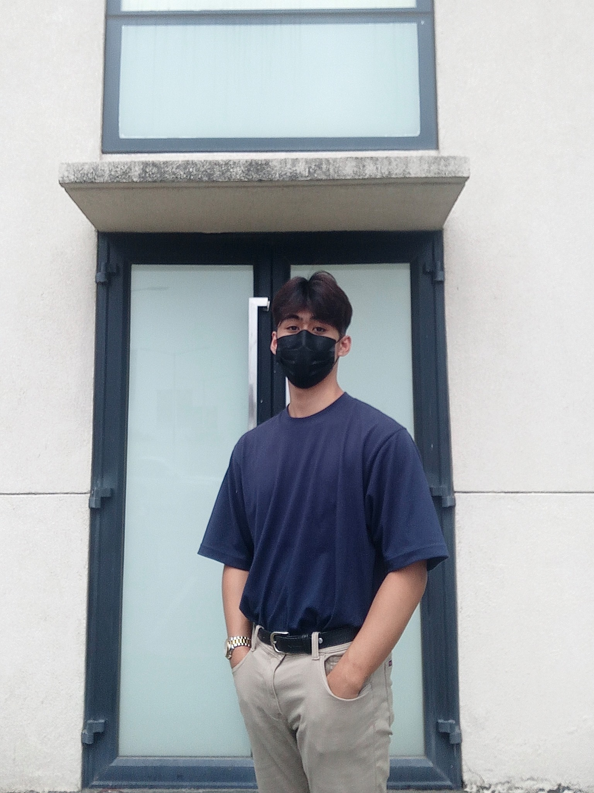

EDSON BAYOT
HOME
HOBBIES
ABOUT ME
CONTACT

ABOUT ME 👾
I am Jonathan Edson M. Bayot, Senior Computer Engineering Student at De Lasalle University Dasmarinas
My motto is "If you're not a good shot today, don't worry.
There are other ways to be useful SHAKDART"